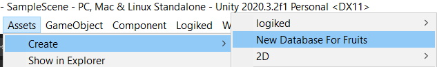
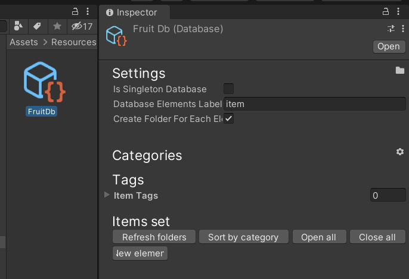
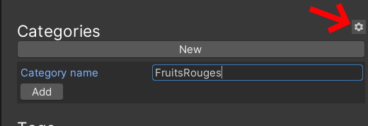
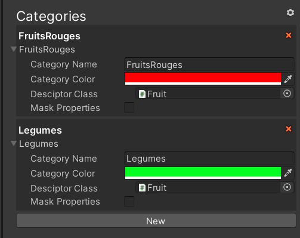
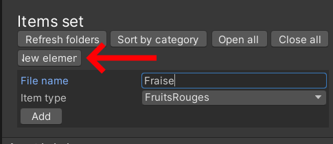
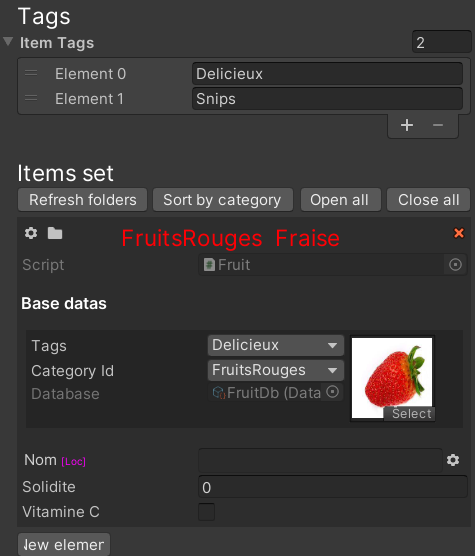
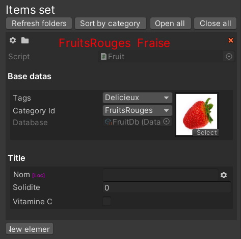
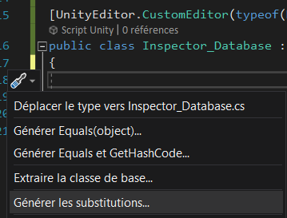
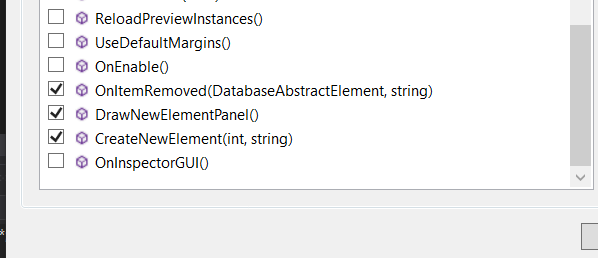

Notes : ⚠️ Cette section n'est pas à jour.
Les databases
[Utilise Logiked_Source]
Dans les projets, on a souvents recours à des scriptables objects de toute nature. Dans un jeu typique typiquement on retrouve fréquement
- Des objets
- Des personnages
- Des sons
- Des structures qui se génèrent
- Des des pièces de votre roguelike
- ...
C'est pas les idées qui manquent...
Le namepace logiked.source.database réponds au besoins suivants
Pouvoir lister ces resources, les regrouper et les organiser en catégories/tags
Avoir un accés simple aux resources depuis n'importe quelle partie du code
Pouvoir, a terme, supporter le modding
Note : On est pas dans une optique de performance. On ne parle pas de BDDs qui traitent des millions d'élements avec des requêtes, comme en SQL ou autre.
Ce qui est encore en [WIP/Todo]
- L'accés aux élements par des IDs customs
- L'ajout dynamique d'élements
- L'ajout dynamique de catégories
- La création d'un script qui référence tous les objets de la Bdd dans une classe statique, pour pouvoir faire
var a = DatabaseItems.Categorie1.Item2;
Le mini Tuto : creer sa Bdd [WIP]
Commencez par creer un objet de base qui hérite de DatabaseAbstractElement. Il représente une valeur pour votre Bdd.
using logiked.source.database;
using UnityEngine;
public class Fruit : DatabaseAbstractElement
{
public @"logiked.language.translate.lstring" nom;
public int solidite;
public bool vitamineC;
public override string ItemName => nom;
}
Ensuite, creez une classe pour de votre BDD qui hérite de LogikedDatabase<A, D, C> Allez voir la rérérence pour les paramètres, vous pouvez copiez ceux ici.
N'oubliez pas d'ajouter un CreateAssetMenu pour pouvoir l'instancier dans votre projet.
Ajoutez aussi un inspecteur custom qui hérite de Inspector_LogikedDatabase.
using logiked.source.database;
using UnityEngine;
[CreateAssetMenu(fileName = "FruitDatabase", menuName = "New Database For Fruits", order = 1)]
public class Database : LogikedDatabase<Database, Fruit, DatabaseCategory>
{
}
#if UNITY_EDITOR
[UnityEditor.CustomEditor(typeof(Database))]
public class Inspector_Database : logiked.items.editor.Inspector_LogikedDatabase{}
#endif
Vous pouvez maintenant créer votre BDD dans votre projet.

Mettez là dans un dossier (dans vos resources de préférence)

Ajoutez une catégorie pour vos élements


On va maintenant pouvoir ajouter des élements. Clickez sur "new element" en bas.

Votre premier élement est créer, vous pouvez lui assigner un sprite, des Tags et modifier les champs que vous avez définis.

Remarquez que les champs de votre classe ne sont pas trés bien affichés, on peut mieux faire en ajoutant quelques attributs :
[FieldSectionBegin("Title")]
public string nom;
public int solidite;
[FieldSectionEnd]
public bool vitamineC;

WIP :
Dans le cadre ou vous voulez executer du code particulier à la création de vos fichiers, ou pouvoir encadrer les paramettres pour leur création, vous pouvez redéfinir des méthodes d'affichage dans le code inspecteur de votre BDD.
 
Par exemple : ce code permet d'ajouter une clé customisé pour le Nom lstring de votre element, afin qu'il puisse être traduit automatiquement.
public override DatabaseAbstractElement CreateNewElement(int category, string fileName)
{
var item = CreateNewElement(category, fileName) as Fruit;
item.nom.SetAndSaveValues($"STRING.Fruits.{GetCategory(category).CategoryName}.{fileName}", fileName);
return item;
}
Note: essayez de supprimer un élement de votre BDD (en cliquant sur la petite croix à coté de lui). Si le descripteur comporte un lstring, il vous sera demandé automatiquement si vous voulez supprimer sa clé dans le patch de langue, afin de ne pas avoir de chaînes inutilisés.
Pour finir le tuto
Pour chaque catégorie, vous pouvez modifier le Descripteur utilisé pour la création de nouveau élements. Dans l'éteur il vous suffit d'assigner une valeur du champ
DescriptorClassde votre catégorie avec une classe hérité de @logiked.source.database.DatabaseCategory.Vous pouvez redéfinir le type de catégories utilisés dans la BDD en le précisant dans la définition de votre type LogikedDatabase<A, D, C> (paramètre
C).
Fonctions utiles
- ouais